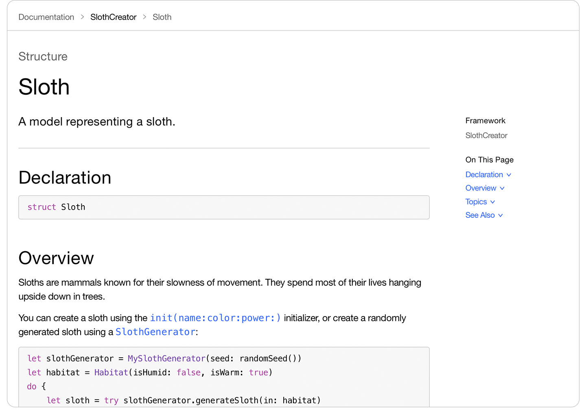

Article
Documenting a Swift Framework or Package
Create developer documentation from in-source comments, add articles with code snippets, and add tutorials for a guided learning experience.
Overview
DocC, or Documentation Compiler, makes it easy to produce rich and engaging developer documentation for your Swift frameworks and packages. The compiler builds documentation by combining in-source comments with extension files, articles, and other resources, allowing you to create rich and engaging documentation for developers.
With DocC, you provide a combination of reference and conceptual content, and connect it together using powerful organization and linking capabilities. Because you write documentation directly in source, you can use the tools you’re already familiar with, like Git, to track changes.
Build Simple Documentation from Your Source Comments
For DocC to compile your documentation, the Swift compiler first builds your Swift framework or package, and stores additional information about its public APIs alongside the compiled artifacts. DocC consumes that information and compiles the documentation into a DocC Archive. This process repeats for every Swift framework or package your target depends on.
To build documentation for your Swift framework or package, use the DocC command-line interface in preview mode and specify a location. On macOS, DocC monitors the files in the location and recompiles when you make changes. On other platforms, you need to quit and restart DocC to recompile the documentation.

DocC uses the comments you write in your source code as the content for the documentation pages it generates. At a minimum, add basic documentation comments to the framework’s public symbols so that DocC can use this information as the symbols’ single-sentence abstracts or summaries.
Alternatively, add thorough documentation comments to provide further detail, including information about parameters, return values, and errors. For more information, see Writing Symbol Documentation in Your Source Files.
Configure a Richer Documentation Experience
By default, DocC compiles only in-source symbol documentation and then groups those symbols together by their kind, such as protocols, classes, enumerations, and so forth. When you want to provide additional content or customize the organization of symbols, use a documentation catalog (a directory with a ‘.docc’ extension).
DocC combines the public API information from the Swift compiler with the contents of the documentation catalog to generate a much richer DocC Archive.
Use a documentation catalog when you want to include any of the following:
A landing page that introduces a framework and arranges its top-level symbols, as well as extension files that provide custom organization for the symbols’ properties and methods. For more information, see Adding Structure to Your Documentation Pages.
Extension files that supplement in-source comments, and articles that provide supporting conceptual content. For more information, see Adding Supplemental Content to a Documentation Catalog.
Tutorials that teach developers APIs through step-by-step, interactive content. For more information, see Building an Interactive Tutorial.
Resource files to use in your documentation, like images and videos.
To associate a documentation catalog with a target in your package, add the catalog to the same directory as the target’s other source files ([PackageRoot]/Sources/[TargetName] by default).
Building, Publishing, and Previewing Documentation with the DocC Plug-in
The preferred way of building documentation for your Swift package is by using the Swift-DocC Plugin. Refer to instructions in the plugin’s documentation to get started with building, previewing, and publishing your documentation to your website or GitHub Pages.
You can also use the DocC command-line interface, as described in Distributing Documentation to Other Developers.
See Also
Related Documentation
Writing Symbol Documentation in Your Source Files
Add reference documentation to your symbols that explains how to use them.